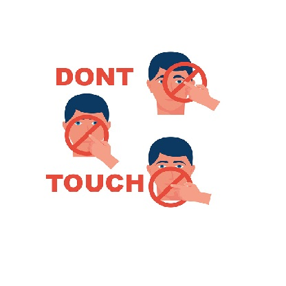

COVID-19 originated in the city of Wuhan in the Hubei province of China, it has spread rapidly across the world, resulting in a human tragedy and tremendous economic damage. By mid-June, there had been over 8 million cases of COVID-19 globally, with over 436,000 deaths. The 2019 novel coronavirus disease (COVID-19) was first reported in China as an infectious upper respiratory disease. The virus has since spread worldwide presenting one of the most serious global health crises in history, with high socio-economic costs. While the health impacts are directly through contagion, the economic impacts are largely a consequence of the preventive measures adopted by the respective governments to curtail its spread. Key measures adopted by most countries to curtail the spread include the closing of their frontiers and partial or complete lockdowns of economies which among other things, have seen the temporary closure of businesses, schools and social services.
The Coronavirus began in Wuhan, Hubei Province, China. Residents who lived in Wuhan had some link to a large seafood and live animal market, which suggest that the mode of transmission of coronavirus was from animal to person. The virus has been named SARS-CoV-2 and the disease it causes has been named coronavirus disease 2019 abbreviated Covid-19. The first known patient of Coronavirus started experiencing symptoms in Wuhan, China on 1 December 2019. Since then, there have been over 800,000 reported cases around the world. The U.S. had the largest reported cases, followed by Spain and Russia. In Africa, South Africa had the largest reported cases, followed by Egypt and Nigeria.
The virus that causes COVID-19 is mainly transmitted through droplets generated when an infected person coughs, sneezes, or exhales. These droplets are too heavy to hang in the air, and quickly fall on floors or surfaces.
You can be infected by breathing in the virus if you are within close proximity of someone who has COVID-19, or by touching a contaminated surface and then your eyes, nose or mouth.
Symptoms of the Coronavirus
Covid-19 affects different people in different ways. Most infected people will develop mild to moderate illness and recover without hospitalization.
Most common symptoms are:
Fever
Dry Cough
Tiredness
Less common symptoms are:
Aches and Pains
Sore throat
Diarrhoea
Conjunctivitis
Headache
Loss of taste or smell
A rash on skin or discolouration of fingers or toes
Serious symptoms are:
Difficulty in breathing or shortness of breath
Chest pain or pressure
Loss of speech or movement
Seek immediate Medical attention if you have serious symptoms. Always call before visiting your doctor or health facility.
People with mild symptoms who are otherwise healthy should manage their symptoms at home.
On average, It takes 5-6 days from when someone is infected with the virus for symptoms to show. However, it can take up to 14days.
Prevention of Contacting the Coronavirus
Protect yourself and others around you by knowing the facts and taking appropriate precautions. Follow advice provided by your local public health agency.
To Prevent the spread of the COVID-19:
Wash or sanitize your hands often
You should wash or sanitize your hands often. Use soap and water, or an alcohol-based hand rub. When you do this, this prevents you from contacting COVID-19 after touching contaminated surfaces.
Maintain a safe distance
Maintain a safe distance from anyone who is coughing or sneezing. Also observe social distance when in public. You should be at least 1m far from anyone next to you.

Avoid Touching of the face
Don't touch your eyes, nose or mouth to avoid transmitting the virus from your hands to your face which is more sensitive.
Sneezing or Coughing
Cover your nose and mouth with your elbow bent or a tissue when you cough or sneeze. Stay home if you feel unwell.
Seeking Medical Attention
If you have a fever, cough and difficulty breathing, seek medical attention. Call in advance. Follow the directions of your local health authority.
Wear Face Masks
Always wear your face mask when in the public to avoid contacting the virus from the air. Breathing the same air with a person that has already contacted the virus can get you contacted
The Medical Healthcare companion created to keep you up to date with Medical issues. It also gives helpful articles, tips and information about the happenings in the world of health.